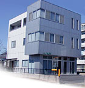

人、産業、未来。Human Future Industry
工場に必要なものは、
だいたい揃います。
株式会社ヤシマは、埼玉県八潮市の機械工具商社です。切削工具から電動工具、伝動機器、FA関連材、工作機械、工場設備、空調機器、精密測定機器まで。八潮・草加・三郷・春日部、足立区・葛飾区を中心に、約200社のお客様とお取引しています。
昭和45年に機械部品加工の工場として創業した会社です。売るだけでなく、削る側の事情が分かる商社でありたいと考えています。
取扱メーカー（販売特約）
特約店として、
正規に扱っています。
並行品ではありません。メーカーとの契約に基づく特約店・契約販売店として仕入れているため、技術的な問い合わせもメーカーへ直接つなげます。
-
MMC 三菱マテリアル株式会社
ダイヤチタニット特約店
超硬工具・スローアウェイチップ
-
オーエスジー株式会社
特約店
タップ・ドリル・エンドミル
-
株式会社森精機製作所
MORI会 会員
工作機械（現 DMG森精機株式会社）
-
日立工機
ストール店
電動工具（現 工機ホールディングス株式会社）
-
日立ツール株式会社
契約販売店
超硬工具・金型用工具（現 株式会社MOLDINO）
※ 社名は原則として当時の表記のままとし、現在の社名を括弧内に併記しています。
営業品目
一社で足りる、
というのが強みです。
工具の発注先と、機械の商談先と、空調の手配先が全部ばらばらだと、手間も納期もかさみます。まとめて言っていただければ、こちらで捌きます。
工具
- 機械工具
- 切削工具
- 電動工具
機械・設備
- 工作機械
- 生産財・生産機械
- 工場設備
- 空調機器
機器・部材
- 伝動機器
- FA関連材
- 精密測定機器
- 物流改善機材
サービス
- 設計施工
- 機械加工部品の製作販売
- ISO 9001／14000 取得関連機器
- 国内外からの調達
対応エリア
この範囲なら、
すぐ伺えます。
首都高速6号線 八潮南出口から5分という立地です。近いことは、商社にとってそのままサービスの質になります。
- 八潮市
- 草加市
- 三郷市
- 春日部市
- 東京都足立区
- 東京都葛飾区
約200社のお客様とお取引しています
沿革
削る側から、
売る側へ。
創業は機械部品加工の工場でした。平成6年に機械工具販売業を立ち上げ、今の形になっています。工場の言葉が通じるのは、この経緯があるからです。
- 昭和45年1970
機械部品加工および機械設計製作業「ヤシマ製作所」として創業。
- 昭和47年1972
法人登記。有限会社ヤシマ製作所（資本金300万円）設立。
- 平成6年1994
商号を有限会社ヤシマとし、機械工具販売業を新規立ち上げ。同時に代表取締役 小早川淳二 就任。
- 平成7年1995
資本金増資に伴い、現商号 株式会社ヤシマ となる。
- 平成11年1999
新店舗建設により営業所移転（現在の営業所在地）。
- 平成20年3月2008
ISO 9001：2000 認証取得。認証機関 ビューローベリタスジャパン株式会社／登録機関 JAB（財）日本適合性認定協会。
よくあるご質問
はじめての方へ
工具1本からでも届けてもらえますか。
八潮・草加・三郷・春日部、足立区・葛飾区を中心に約200社のお客様とお取引しています。近隣であれば少量でもお届けします。まずはお電話ください。
どのメーカーの工具を扱っていますか。
三菱マテリアル（ダイヤチタニット特約店）、オーエスジー（特約店）、森精機（MORI会 会員）、日立工機（ストール店）、日立ツール（契約販売店）などの特約・契約販売店です。そのほかのメーカー品もお取り寄せします。
工作機械の設置や工場のレイアウトも相談できますか。
できます。工作機械・工場設備・空調機器・物流改善機材について、販売だけでなく設計施工まで承っています。
部品加工も頼めますか。
承ります。当社は昭和45年に機械部品加工および機械設計製作業として創業しており、機械加工部品の製作販売も営業品目のひとつです。
ISO 取得の準備をしています。相談できますか。
ISO 9001／14000 の取得に関連する機器を営業品目として扱っています。当社自身も平成20年3月に ISO 9001：2000 の認証を取得しました。
会社概要
株式会社ヤシマ
- 商号
- 株式会社 ヤシマ
- 代表者
- 代表取締役 小早川 淳二
- 創業
- 昭和45年（1970年）
- 設立
- 昭和47年11月 有限会社ヤシマ製作所として法人登記
平成7年 株式会社ヤシマ - 資本金
- 1,000万円
- 営業所在地
- 〒340-0815 埼玉県八潮市八潮6-1-14
- 電話・FAX
- Tel. 048-997-6800 ／ Fax. 048-997-6865
- 認証
- ISO 9001：2000（平成20年3月取得）
- 取引銀行
- 埼玉県信用金庫 八潮支店
武蔵野銀行 草加支店 - 主要取引先
- 八潮市・足立区・葛飾区・三郷・草加・春日部 顧客数 約200社

アクセス
八潮市八潮6-1-14
- 車
首都高速6号線 八潮南出口より5分
- つくばエクスプレス
八潮駅より東武バス5分 中馬場交番 下車
- 東京メトロ千代田線
綾瀬駅より東武バス5分 円照寺前 下車
品番が分からなくても大丈夫です。
「こういう加工をしたい」「この機械に付くものが欲しい」でお答えできます。現物や写真があればなお確実です。